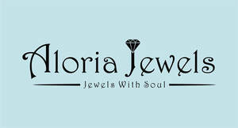

Trade Mark Journal No.2025/025 20 June 2025
UK00004214008 4 June 2025 (14)

- Class 14
- Diamond jewelry; Jewellery; Jewellery incorporating diamonds; Gold jewellery; Jade [jewellery]; Pearls [jewellery]; Rings being jewellery; Rings [jewellery]; Jewellery stones; Pendants [jewellery]; Jewellery, including imitation jewellery and plastic jewellery; Necklaces [jewellery]; Jewelry; Platinum jewelry; Pearls [jewellery, jewelry (Am.)]; Jewellery brooches; Gold plated brooches [jewellery]; Bracelets [jewellery]; Rings [jewellery, jewelry (Am.)]; Ivory jewellery; Synthetic stones [jewellery]; Diamonds; Enamelled jewellery; Ivory [jewellery, jewelry (Am.)]; Jewellery chain of precious metal for necklaces; Jewellery in semi-precious metals; Necklaces [jewellery, jewelry (Am.)]; Jewellery made from gold; Sterling silver jewellery; Ornaments [jewellery]; Chains [jewellery, jewelry (Am.)]; Jewellery chain; Rings [jewelry]; Precious jewellery; Pendants [jewelry]; Bracelets [jewellery, jewelry (Am.)]; Charms [jewellery]; Charms for jewellery; Jewellery charms; Medallions [jewellery, jewelry (Am.)]; Jewellery chain of precious metal for bracelets; Jewellery chains; Chains [jewellery]; Ring bands [jewellery]; Jewellery chain of precious metal for anklets; Ornaments [jewellery, jewelry (Am.)]; Silver thread [jewellery, jewelry (Am.)]; Cabochons for making jewellery; Necklaces [jewelry]; Diamond [unwrought]; Rings [jewellery] made of precious metal; Fashion jewellery; Silver thread [jewellery]; Bracelets [jewelry]; Crosses [jewellery]; Gold necklaces; Jewelry chains; Chains [jewelry]; Engagement rings; Wedding rings; Eternity rings; Platinum rings; Silver-plated rings; Rings [trinket]; Bangle bracelets; Bracelets; Gold bracelets.
Hetvi shah